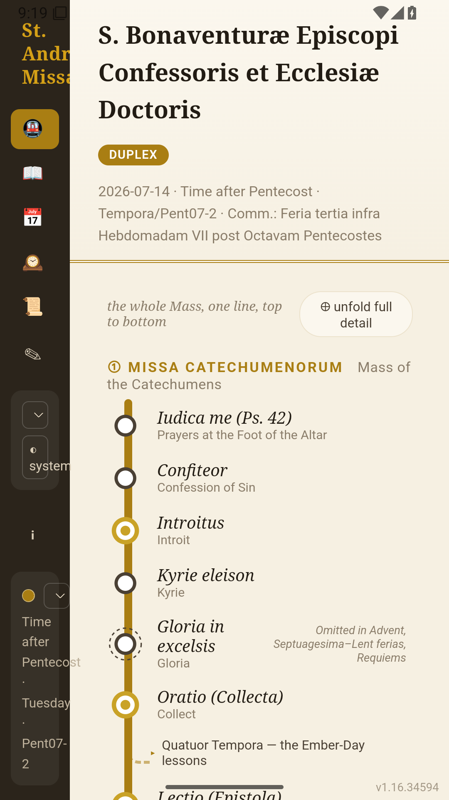
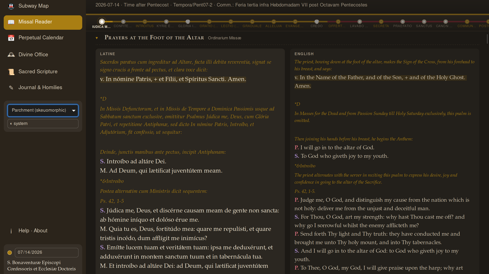

The Mass, connected.
Keep your place in the sequence of the 1962 Mass with a navigable route through its parts.
The liturgy. A living path.
The Mass, the Divine Office, and Sacred Scripture in one navigable workspace. Follow the traditional liturgy, read Latin beside English, and return to the thread of your prayer.
Explore the web preview ↗Discover SanctissiMissaDevelopment preview · Some features are still being refined.

See the whole. Enter the prayer.
The liturgy has a structure, a rhythm, and a place in the year. SanctissiMissa makes that structure visible: move through the parts of the Mass as a connected route, then settle into the prayers in a bilingual reader.

Earlier development preview from the source project; branding and screens continue to evolve.
Keep your place in the sequence of the 1962 Mass with a navigable route through its parts.
Explore the Divine Office alongside the traditional liturgical calendar, beyond the celebration of Mass.
Explore Scripture connections and keep journal or homily notes alongside your liturgical reading.
An evolving companion
Try the running web preview. This is a development release and may have bugs; it offers a first look at the newer liturgical workspace.
Looking for Hello, Word?
Hello, Word: Latin Mass Missal is the existing app on Google Play. Visit its dedicated site for the current Android listing and the original web experience.
Visit the Hello, Word website ↗